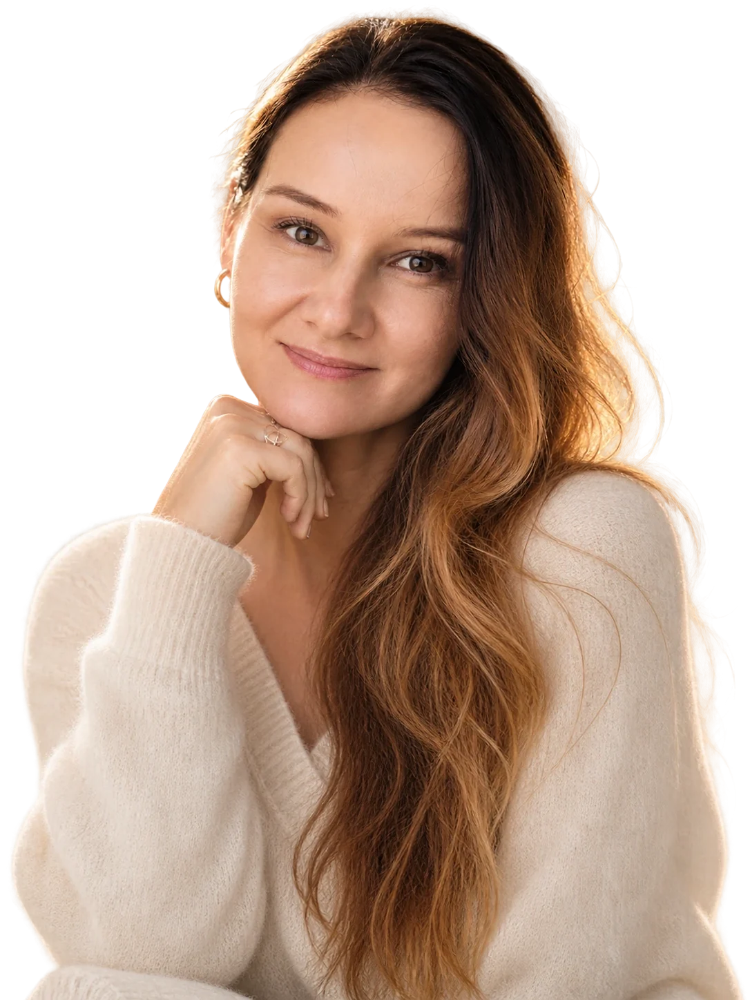
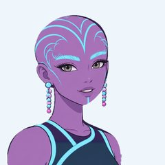
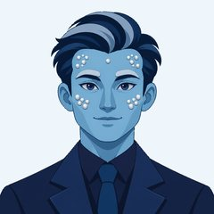
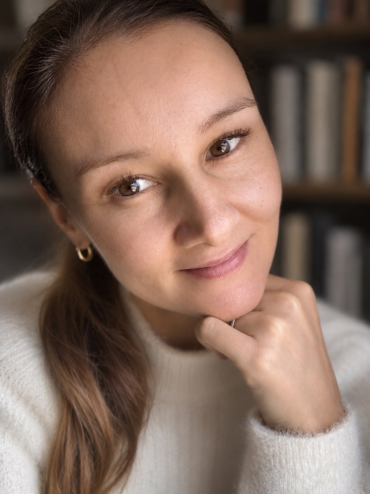

Your Origin is how you show up here on Earth. Understand it, and come back to yourself, to your true scale.
A typology of behavioral patterns: how you think and feel, how you communicate and create, what is in your shadow and where your growth point is. Understand yourself, and all your parts come together in one Self, at its true scale.
Start the scanFor coaches, therapists and retreat hosts. From the first session you see what people miss in themselves: their strengths, their shadow, their growth point, and how they meet others. If you want to read Origins with your people, write to me.
Write to AlexandraStep 1
The Origin Scan takes about 3 minutes. Seven questions, and you meet the pattern you have been living all along.
Start the scanThe Origin Scan
Sample question
When you enter a space, what do you most naturally bring?
Step 2
Your full Origin reading, and the exact connection between two Origins: what draws you together, where it sparks, how to keep it warm.
Get my reading Read our connectionPair Reading


Mirror Portals
One of 300 pair readings
Step 3
The scan knows what you tell it. The cards show what you would never tell yourself.
Я создала сканер как способ узнать ваш звёздный тип души: вы отвечаете - сканер считает. Карты же показывают то, что вы никогда не расскажете себе сами.
I work with metaphor cards, a projective method. Bring your own question, and leave knowing where to move next.
Спасибо большое за сеанс! Для меня это был очень интересный опыт. Получился экологичный и бесстрессовый контакт с подсознанием, разговор с ним на языке образов. При работе с картами нам удалось поднять какие-то совершенно новые пласты моей психики, в которые мы не ходили даже с моим постоянным психотерапевтом. Я считаю, что метафорические карты - удивительно глубокий и при этом нетравматичный метод работы, и ты очень чутко вела меня по этому пути, задавала правильные и своевременные вопросы. Я уходила уже с вполне чётким инсайтом и понятными рекомендациями, но такое ощущение, что он запустил процесс внутренней трансформации, который идёт и сейчас. Мысли и образы «догорают», и мне в этом процессе на удивление комфортно и приятно! Буду очень рекомендовать этот метод другим людям: уверена, он впечатлит и новичков, и тех, кто не первый день находится в терапии. А я обязательно приду ещё, с новым запросом. Спасибо!
"All the answers are inside, but how do you find them without the right questions?"
Your full personal Origin reading in PDF comes with the session.
45 minutes, one to one. $111.
About me About the two of us
If people soften and open around you without quite knowing why, this page is yours.· Siriusian
The map
Hover over an Origin and read its first line. Some people know before they take the scan.
A typology of behavioral patterns: how you show up in this 3D world, here on Earth. How you think and feel. How you communicate and create. What is in your shadow, and where your growth point is. What you are ready to receive from the world, like a child from Mother Universe.
To know your essence, your strong sides and your weak ones. To integrate your shadow. Most people simply do not see this in themselves. To understand yourself, so that all your parts come together in one Self, at its true scale.
Once you accept yourself, you can understand those so very other others, and make peace with them. This is how we grow harmony, and peace in the whole world. And this goes far beyond romance: your children, your parents, your boss, your colleagues, and even your clients 😉
In everyday life it means this:
you stop spending your strength proving the part that tires you, and put it where it flows without effort.
You see why one person feels like home and another like a storm.
And the restless place that keeps asking for proof grows calm.
If you know a part of life that has nothing to do with relationships, write to me personally.
Типология поведенческих паттернов: как вы проявляетесь в этом 3D мире, здесь, на Земле. Как вы думаете и чувствуете. Как общаетесь и творите. Что живёт в вашей тени и где ваша точка роста. Что вы готовы принять от мира, как ребёнок, которому нравится, когда о нём заботятся.
Чтобы узнать свою суть, свои сильные и слабые стороны. Чтобы интегрировать тень. Понять себя, чтобы все ваши части собрались в одну Самость, в её истинном масштабе.
Когда вы принимаете себя, вы можете понять таких других других и примириться с ними. Так мы растим гармонию и мир во всём мире. Отношения тут понимаются в широком смысле: это не только романтические, но и отношения родителей и детей, дружеские, рабочие, с коллегами, начальниками и, конечно, с клиентами.
В обычной жизни это значит:
Если вы знаете сферу жизни, которая никак не связана с отношениями, напишите мне лично.
We are all stardust, you too. And by all indirect signs, we are here to grow awareness and sow the seeds of consciousness across the universe.
Эта система для тех, кто ищет вселенную и находит её в себе.
This system is for those who search for the universe, and find it within themselves.
Start the scan